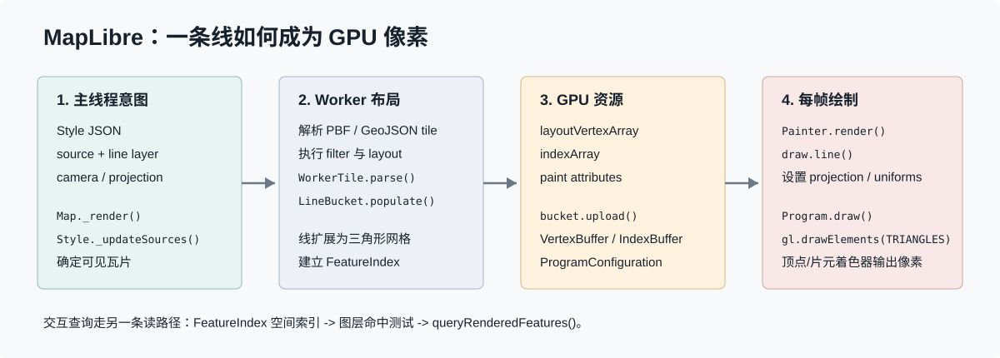

Architecture
一条 MapLibre LineString 如何成为像素
以一条 `line` style layer 为例，完整链路横跨主线程、Web Worker 和 GPU。真正需要建立的不是函数清单，而是三个时间尺度：Style 变化时做什么、tile 到达时做什么、每一帧又复用什么。

一页调用链
new Map({style})
-> Map.setStyle()
-> Style.loadJSON() / Style._load()
-> create Source + StyleLayer
-> Map.triggerRepaint() -> browser.frame() -> Map._render()
-> Style._updateSources(transform)
-> VectorTileSource.loadTile()
-> actor.sendAsync(loadTile) 到 Web Worker
-> WorkerTile.parse()
-> layer.createBucket() -> LineBucket.populate() -> addLine()
-> 回主线程 Tile.loadVectorData() -> bucket.upload()
-> Painter.render() -> renderLayer() -> draw.line()
-> Program.draw() -> gl.drawElements(gl.TRIANGLES, ...)
-> vertex shader -> fragment shader -> framebuffer 像素1. 帧不是每次 API 调用立即画
`Map._update()` 标记 style/source dirty 并调用 `triggerRepaint()`。后者只在当前没有 frame request 时请求一次浏览器帧，因此同一帧前多次修改会被合并。`Map._render()` 批量更新样式表达式、source、terrain 和 symbol placement，随后调用 `painter.render()`（Map._render）。
setPaintProperty(...)
setFeatureState(...)
setCenter(...)
-> 标记不同 dirty 状态
-> 同一个 requestAnimationFrame
-> 一次 _render()2. Transform 决定本帧需要哪些 tile
相机中心、zoom、bearing、pitch、projection 和 viewport 共同决定可见瓦片。`Style._updateSources(transform)` 更新每个 TileManager。VectorTileSource 为 tile 生成 URL 和 WorkerTileParameters，再通过 actor 发给可用 worker（VectorTileSource.loadTile）。
网络请求与 worker layout 是异步的，所以一次帧可能先画已有低级别 tile；新 tile 到达后 source 再次 dirty 并触发下一帧。这是地图缩放时先模糊后清晰的基础机制之一。
3. WorkerTile 把要素变成 Bucket
`WorkerTile.parse()` 遍历 StyleLayerIndex 中按 source/source-layer 分组的 layer family。它读取 PBF feature，执行 filter 和 zoom 判断，然后调用 `layer.createBucket()` 与 `bucket.populate()`。同时把几何写入 FeatureIndex，供后续 `queryRenderedFeatures()` 使用（WorkerTile.parse）。
| Worker 产物 | 用途 | 为什么不放每帧做 |
|---|---|---|
| layout vertex array | 位置、法线化挤出方向、线距离等。 | 几何展开成本高，可跨帧复用。 |
| index array | 哪些顶点组成三角形。 | 拓扑不随普通相机移动改变。 |
| paint arrays | 数据驱动颜色、宽度等属性。 | 提前编码后 GPU 可直接读取。 |
| FeatureIndex | 屏幕拾取和要素查询。 | 避免查询时扫描整张 tile。 |
| glyph/image dependencies | 文字和图标 atlas。 | symbol layout 必须等待外部资源。 |
4. 为什么一条线会变成三角形
WebGL 的原生 `gl.LINES` 很难稳定表达可变宽度、端帽、连接、虚线、抗锯齿和数据驱动样式。`LineBucket.populate()` 筛选 feature 后进入 `addFeature()` / `addLine()`，把中心线沿法线方向扩展成三角形条带，并生成 layout vertex array 与 triangle index array（LineBucket）。
中心线 A -------- B
扩展后： A_left -------- B_left
| triangle |
A_right -------- B_right
圆角、斜接、端帽还会增加额外顶点。因此 line layer 的最终 draw mode 是 `gl.TRIANGLES`，不是 `gl.LINES`。这是理解地图线宽、连接样式和 GPU 成本的关键。
5. 回主线程后上传 GPU
worker 返回可序列化 bucket 数据。主线程 `Tile.loadVectorData()` 接收它；Painter 每帧先让使用中的 TileManager `prepare(context)`，未上传的 bucket 创建 VertexBuffer 和 IndexBuffer。静态 tile 不需要每帧重新解析 PBF 或重建线网格，只需复用 GPU 资源。
Worker typed arrays
-> transferable message
-> Bucket on main thread
-> context.createVertexBuffer(...)
-> context.createIndexBuffer(...)
-> VAO + shader program6. Painter 为什么分三个 pass
`Painter.render()` 先处理需要 framebuffer 的 offscreen pass，再以从上到下的顺序画可进入 opaque pass 的层，最后从下到上画 translucent pass。这样既利用深度测试减少过绘制，又保持透明图层和 style 顺序的语义（Painter.render）。
| Pass | 典型任务 | 顺序直觉 |
|---|---|---|
| offscreen | heatmap、hillshade、render-to-texture 等中间结果。 | 先准备后续要采样的纹理。 |
| opaque | 允许不透明优化的层。 | 从上到下，借助深度减少无效片元。 |
| translucent | 透明和其余 style layer。 | 从下到上，尊重样式叠放顺序。 |
7. draw.line 到最终 WebGL 调用
`Painter.renderLayer()` 根据 layer 类型选择 `draw.line()`。它逐 tile 取得 `LineBucket`，选择普通线、图案、虚线或渐变 shader，准备 projection data、uniform、纹理和 stencil，然后调用 `Program.draw()`（draw_line.ts）。
program.draw(
context,
gl.TRIANGLES,
depthMode, stencilMode, colorMode,
uniforms, terrainData, projectionData,
vertexBuffer, indexBuffer, segments,
paintProperties, programConfiguration
)`Program.draw()` 绑定 VAO、layout buffer、数据驱动 paint buffer 与 index buffer，对每个 segment 调用 `gl.drawElements()`。顶点着色器把 tile 坐标和挤出量转换为 clip space，片元着色器决定最终颜色和边缘抗锯齿（Program.draw）。
8. 拾取不是从 framebuffer 猜对象
`queryRenderedFeatures()` 会把屏幕查询几何转换到 tile 空间，先查询 FeatureIndex 网格，再调用具体 StyleLayer 的 `queryIntersectsFeature()` 做几何命中。它返回的是渲染语义下的 feature，不是简单读取鼠标下像素颜色（FeatureIndex.query）。
9. 什么变化会重做哪一层
| 变化 | 通常保留 | 需要更新 |
|---|---|---|
| pan / zoom | 已加载 tile 的 bucket 和 buffer | 可见 tile、投影 uniform、帧绘制。 |
| 常量 line-color | 几何 bucket | 样式值和 draw。 |
| line-join / filter | 原始 tile 缓存可能保留 | worker layout / bucket。 |
| GeoJSON setData | StyleLayer 配置 | GeoJSON 切片、解析、bucket、buffer。 |
| 仅 DOM Marker 移动 | 地图 GPU layer | DOM 定位；它不进入同一 bucket。 |
源码基线与限制
本章基于 MapLibre GL JS 6.9.0、提交 `ae328866`。官方 `ARCHITECTURE.md` 的总体模型仍有效，但当前源码的具体 draw 文件位于 `src/webgl/draw/`，而不是旧说明中的 `src/render/draw_*.js`；学习源码时应以固定提交为准。